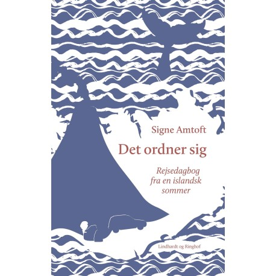
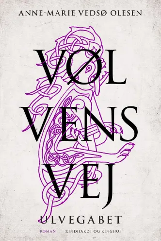

Inspiration
Om du er til krimier, poesi, fantasy eller blot er ude efter en gave til en du har kær - kan vi hjælpe dig!
Vi har fyldt hylderne med de nyeste udgivelser og vores favoritter lige nu - dyk ned i bøgernes verden!
Inspiration


- 
- 
-

Er du på udkig efter nye spændende bøger?
- Og ønsker du at blive udfordret til at prøve noget helt nyt?
Nogle gange kan vi godt 'sidde fast' i de genrer vi godt kan lide, men der er så mange fantastiske bøger derude! Her har vi samlet vores favoritter fra forskellige genrer - Hvad mon der dukker op ved dig?- Måske din nye yndlingsbog!